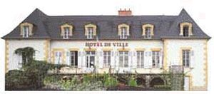
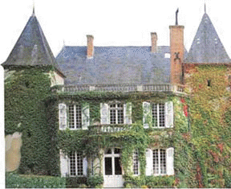
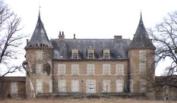
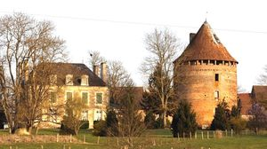
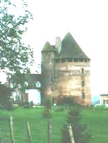
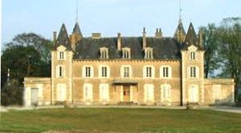

Recensement Jean-Claude Truffet
| Département | 03 — Allier |
| Canton | Dompierre-sur-Besbre |
| Commune | Dompierre-sur-Besbre |
| Type d'édifice | Château |
| Période d'origine | XVI-XIX |






Trois châteaux à Dompierre sur Besbre château de la Bergerie du XIXe siècle, de Chambonnet du XVIe siècle et de la Croix du XIXe siècle hôtel de ville. BERGERIE, dominant les confluents de la Besbre et du Roudon, La Bergerie est un château construit au XIXe siècle, par M. Delvaux sur une propriété où les moines élevaient des moutons. Cet édifice a remplacé un ancien domaine dépendant de l'abbaye de Sept Fons. En 1503 déjà, La Bergerie était le siège d'un fief et Claude Conchon, écuyer, est dit seigneur de La Bergerie. Il fait alors aveu à la duchesse de Bourbon d'un petit fief contenant en la châtellenie de Belleperche. Dommage que le château ne soit plus entretenu et tombe petit à petit en ruines. CHAMBONNET, le fief de Chambonnet est connu depuis la fin du XIVe siècle. En 1396, Perrin Brocal est dit seigneur de Chambonnet. En 1439, la seigneurie appartient à Jehan le Bastard de l'Espinasse et en août 1501 Gilbert de Lespinasse donne foi et honneur pour Chambonnet, au duc de Bourbon. Dès 1556, Chambonnet entra dans les possessions de la famille des Marcellanges, déjà connus dans le Bourbonnais. En mars 1573, René de Marcellanges participa à une expédition meurtrière connue par ailleurs, avec trois gentilhommes, il se rendit au château de Chausssin à Abrest pour assassiner le seigneur du lieu, François de Senneret, qui avait, quelque temps auparavent, lui même assassiné son épouse Anne d'Augerond.
La CROIX, maison bourgeoise construite en 1879, par Edouard Defaye, notaire de Dompierre, le château de La Croix reçoit aujourd'hui les services de l'hôtel de ville.
Bergerie, cette demeure comporte un long corps de logis rectangulaire flanqué de deux tours rondes aux angles de la façade sud-est, et deux petites tours carrées à peine saillantes dominent l'autre face, les murs sont recouverts d'un enduit sur lequel se détache le harpage des ouvertures et des angles ainsi que la corniche en pierre blanche. Chambonnet est une grosse tour, bâtie en briques, aux murs assez minces et n'eut probablement jamais de but défensif et rappelle par ses proportions et son décor la tour de Couffour , dont elle doit être sensiblement contemporaine (seconde moitié du XVIe siècle). La tour qui servait d'habitation, était desservie par un petit escalier à vis logé dans sa propre tourelle, accolée à la tour principale. L'ensemble comporte quatre niveaux, couronnés par des toitures en poivrière. Le dernier étage de la grosse tour est occupé par une galerie ouverte sur l'extérieur, formée de simples piliers de briques. Faut-il voir dans cet espace un lien de surveillance de la campagne environnante, ou une pièce d'agrément rappelant les loggias italiennes, peut-être les deux à la fois. Chaque niveau est occupé par une pièce circulaire et au premier étage, des vestiges de peintures murales se rattachent nettement au type de décor conservé au château de Chareil Cintrat, nous y retrouvons les mêmes vers latins concernant les dieux de la mythologie, transcrits au-dessus de scènes difficilement lisibles dans les deux cas.
La Croix, c'est un long bâtiment rectangulaire, à rez de chaussée surélevé, éclairé de larges fenêtres. Deux pavillons carrés en légère saillie, sont accolés aux angles de la façade. Le jardin avait été dessiné par Treyve de Moulins.
Famille de M. Delvaulx Famille d'Edouard Defaye
"
Château de la Bergerie, de Chambonnet et de la Croix à Dompièrre sur Besbre